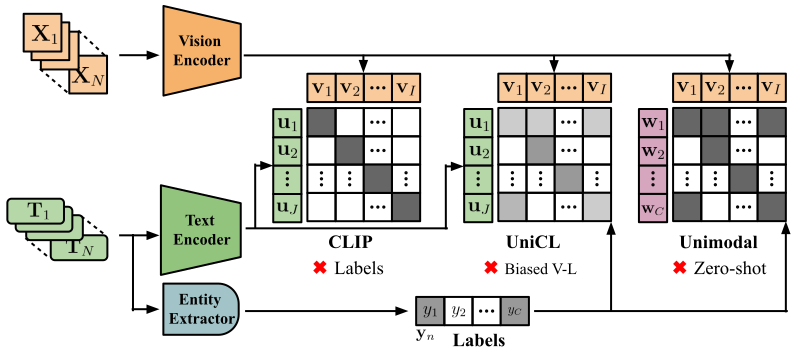
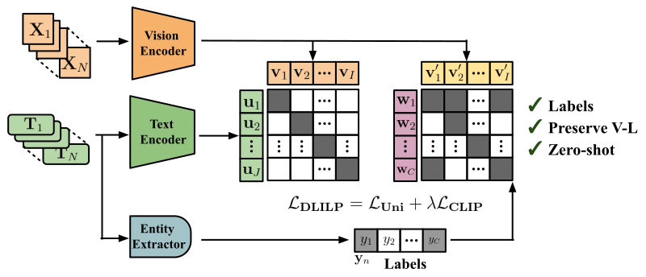
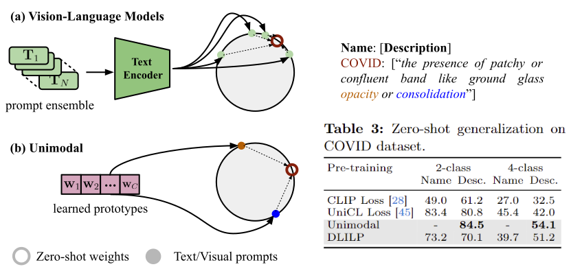
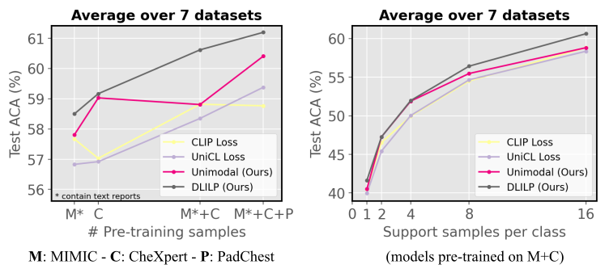

A Reality Check of Vision-Language Pre-training in Radiology:
Have We Progressed Using Text?
Highlights
- Current Chest X-ray (CXR) Vision-Language Models (VLMs) rely on text information coming from one unique
datasets, MIMIC, and struggle to incorporate label information from additional data sources (e.g. CheXpert, PadChest).
- We challenge the status quo of current VLMs for visual comprehension of CXRs, and revisit
supervised pre-training, based on expert labels extracted trough NLP-based methods.
- We demonstrate that such Unimodal pre-training is a largely competitive solution, able to integrate larger
heterogeneous data sources, and is more efficient than VLMs.
- In addition, we offer a critical view of the current trends in evaluating the zero-shot generalization
capabilities of CXR VLMs to novel diseases, showing that these have been evaluated using overoptimistic
experimental settings.
- Finally, we propose a novel optimization strategy, Disentangled Language-Image-Label Pre-training (DLILP),
to better integrate image-text-label information.
Pitfalls of Existing Pre-training Strategies
Current pre-training practices need to integrate heterogeneous data sources, with text and label information. UniCL
loss has been recently proposed to provide a label alignment during vision-language contrastive pre-training.
Nevertheless, we observe that such strategy biases the vision-language representations towards the subset of
base labels considered, and does not provide any benefits over CLIP loss when evaluated on novel categories.

Disentangled Language-Image-Label Pre-training (DLILP)
To address the limitations of existing literature for leveraging image-text-label datasets for pre-training, we
propose a novel Disentangled Language-Image-Label Pre-training (DLILP) strategy. In particular,
we propose to incorporate image-label and image-text supervision into different subspaces of the learned
vision representation to avoid biasing the vision-language alignement towards the provided labels.

Do CXR VLMs Generalize to Novel Diseases?
Recent literature, i.e. MedCLIP or MedKLIP, have defended the effectiveness of vision-language pre-training
to generalize to unseen diseases thanks to text-driven predictions. These experiments have been typically
carried out in 2-class COVID classification. We provide two novel observations on this regard:
- COVID description (see below) contains lesions that appeared in the pre-training stage, and are
unspecific. When evaluated on 4-class classification tasks, VLMs fail to differentiate COVID
from other lung conditions.
- Unimodal, supervised pre-trained models, can leverage visual prompts by
averaging clas prototypes of these findings. We observe that without using text encoder,
such solution gets better results than VLMs for this task.

Few-Shot Linear Probing Adaptation
We evaluate the transferability of pre-trained features on 7 downstream tasks, in the challenging
(but potentially impactful) case in which only few-shot labeled samples are available. We evaluate models
under different pre-training datasets, and number of shots. Results again unveil that Unimodal
pre-training is a robust approach, able to better integrate larger data sources than vision-language models.
In addition, DLILP shows improved ability to leverage both label and noisy text supervision.

Citation
Please cite our paper if it is helpful to your work:
@inproceedings{dlilp,
title={A Reality Check of Vision-Language Pre-training in Radiology: Have We Progressed Using Text?},
author={Julio Silva-Rodr\'iguez and Jose Dolz and Ismail Ben Ayed},
booktitle={ArXiv Preprint},
year={2024}
}
Please feel free to contact us: julio-jose.silva-rodriguez@etsmtl.ca.